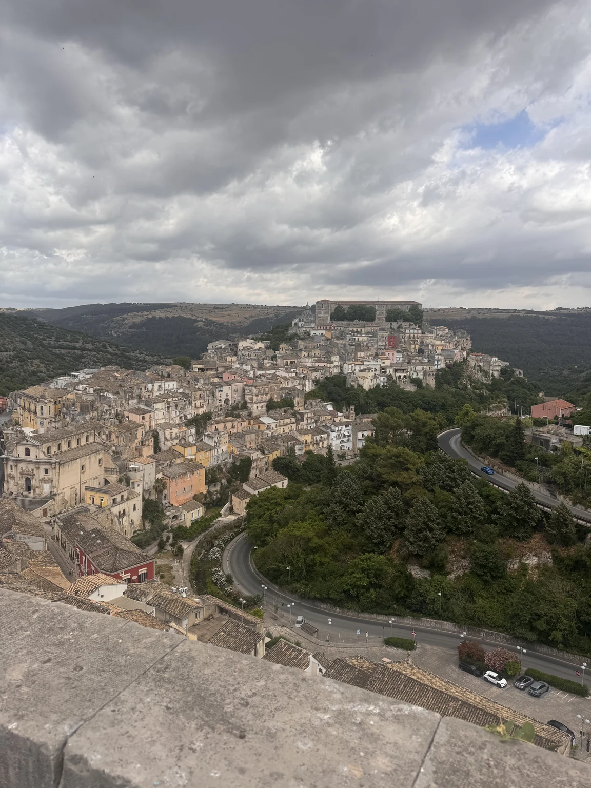
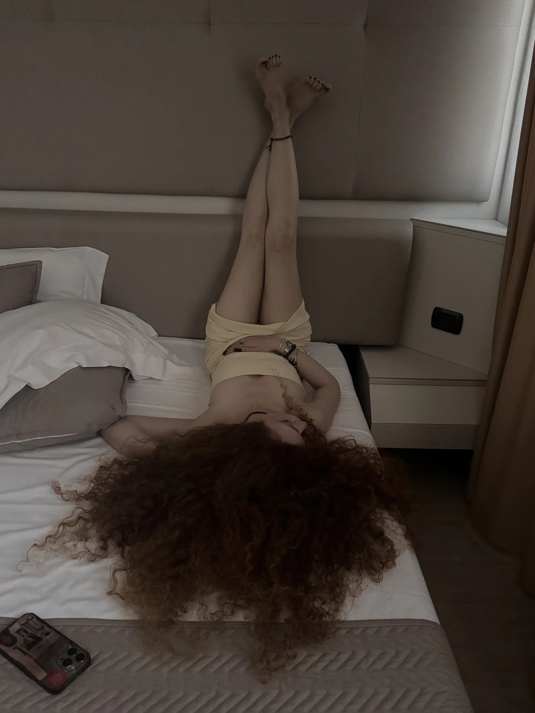
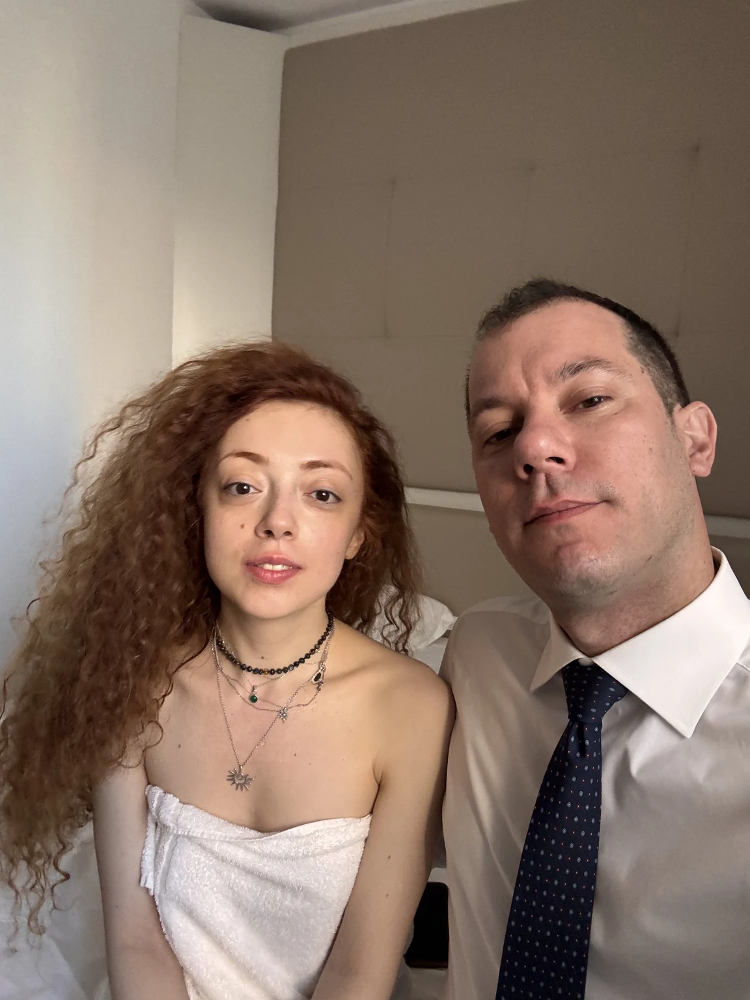
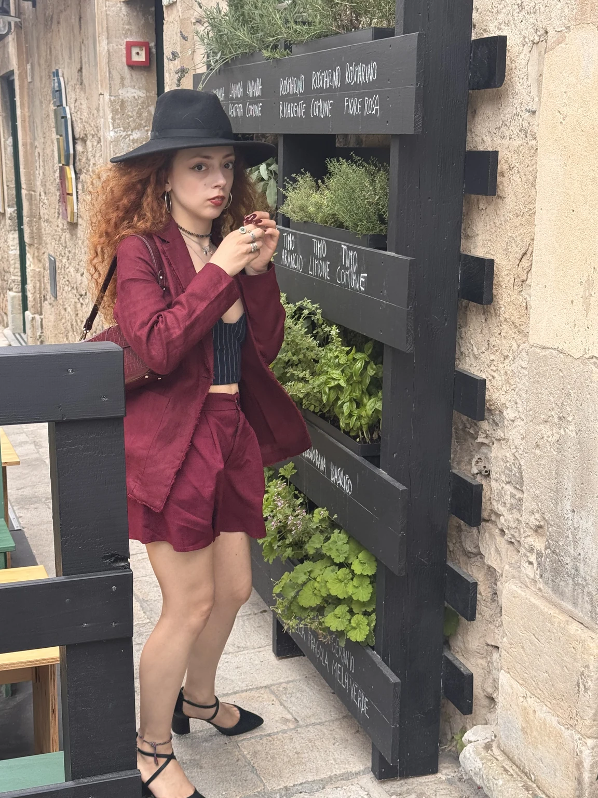
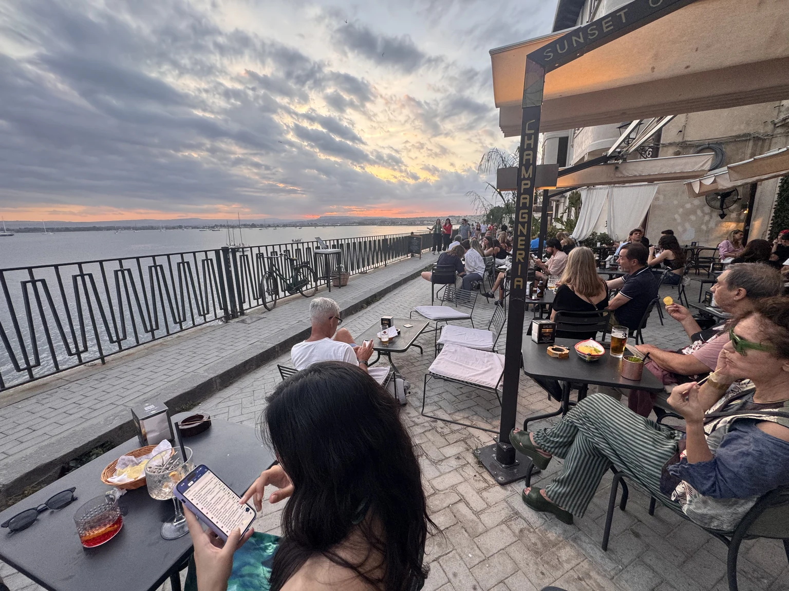
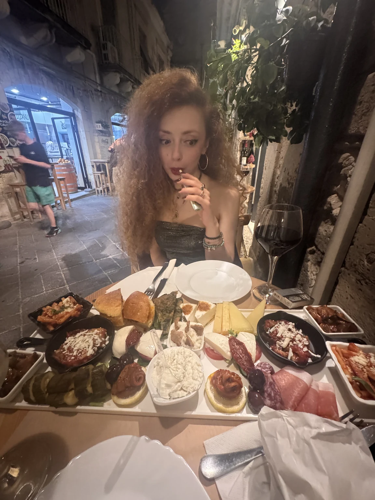
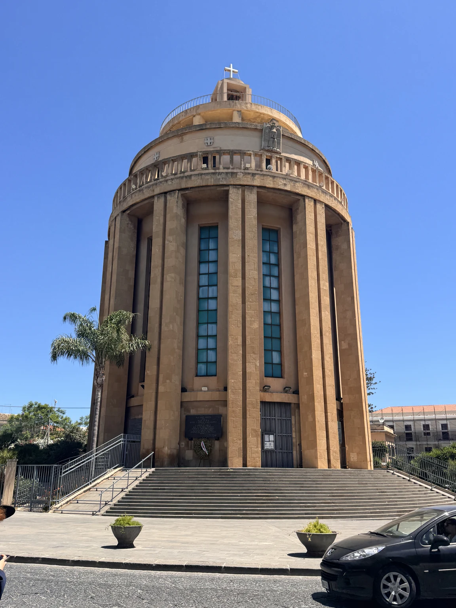
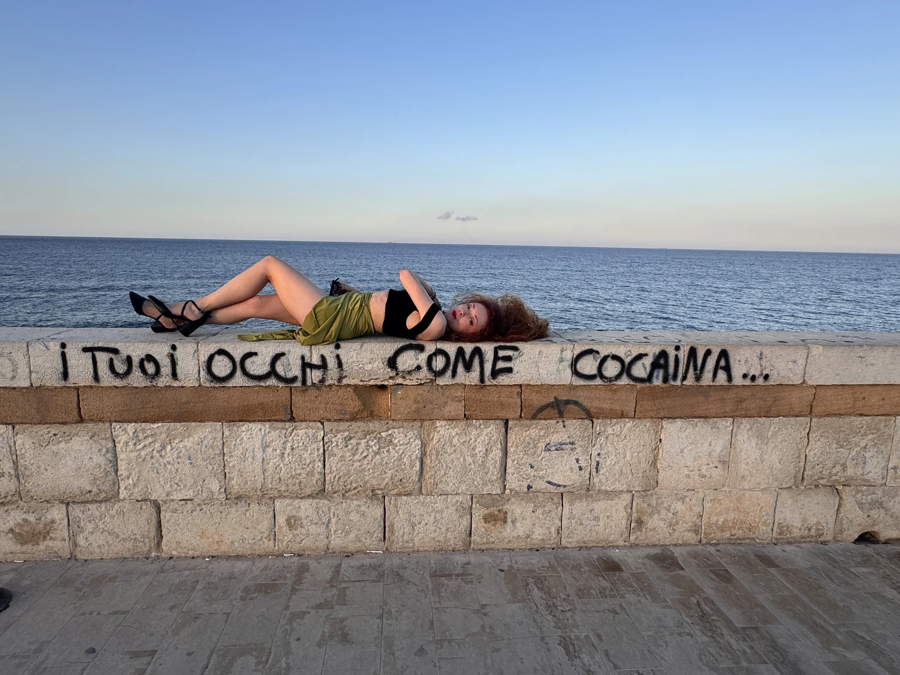
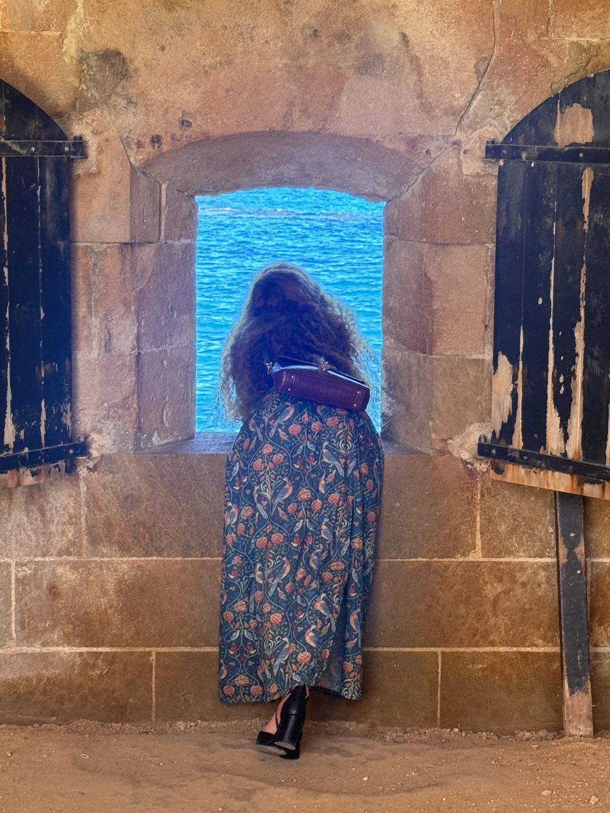
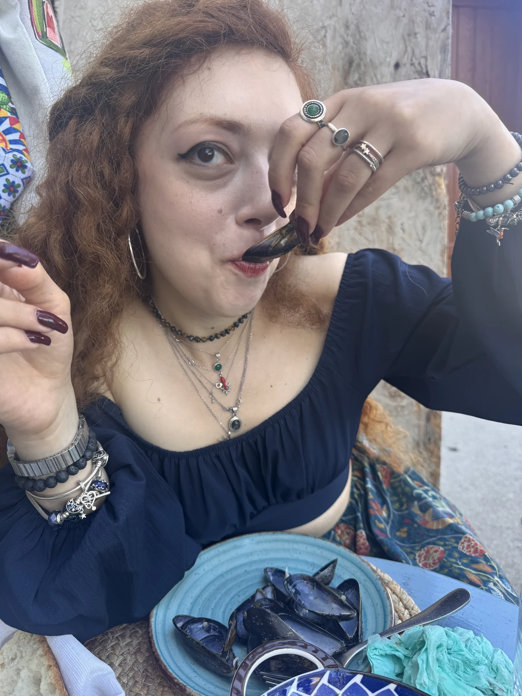

11–14 giugno 2026 · Quattro giorni
Anche questo viaggio comincia con un congresso e continua per conto suo: due notti a Ragusa, tra sale riunioni e la pietra dorata di Ibla, poi Siracusa, dove Ortigia è un’isola che si gira a piedi in un’ora e in cui siamo rimasti tre giorni.
In Sicilia sud-orientale tutto è stato ricostruito dopo il terremoto del 1693, e tutto in barocco: le città sembrano disegnate in una volta sola, con la stessa pietra color miele.
Si arriva la sera prima, si lavora il giorno dopo. Poi, finiti i lavori, si scende a Ibla.

In via Roma, nella Ragusa alta, a due passi dal ponte che scavalca la vallata. Per due giorni è stato insieme albergo e sede del congresso: dalla camera alla sala senza uscire dal palazzo.

Congresso di medicina perioperatoria, 11 e 12 giugno, Hotel Mediterraneo Palace: il paziente cardiopatico, respiratorio, obeso, la gravida, l’anziano, il bambino, e temi trasversali come i dispositivi indossabili, le procedure fuori dalla sala operatoria e la sostenibilità in anestesia. Segreteria organizzativa B Best, cioè noi: per una volta il congresso lo abbiamo anche fatto, non solo seguito.
Ragusa è due città con lo stesso nome, unite da trecento gradini.

Dopo il terremoto del 1693 i ragusani si divisero: una parte ricostruì sul colle nuovo, l’altra restò sulle rovine di Ibla e la rifece in barocco. La fotografia in apertura è presa dal belvedere di Santa Maria delle Scale, dove la scalinata tra le due città si affaccia sui tetti e sulla cupola di San Giorgio. Dal 2002 Ibla è patrimonio dell’umanità con le altre città barocche del Val di Noto. Qui Poli si è fermata a un orto verticale piantato su una parete di pietra: erbe aromatiche in cassette di legno, con i nomi scritti a mano.
Da Ragusa a Siracusa sono novanta chilometri di altopiano, muretti a secco e carrubi. Si arriva sul mare quando il sole sta scendendo.
La prima sera a Siracusa comincia sul lungomare di ponente, con il sole che cala dietro il porto grande, e finisce a tavola nella Giudecca.

Un bar con i tavoli direttamente sulla ringhiera del lungomare di ponente, il lato di Ortigia che guarda il porto grande e il tramonto. Il nome dice tutto: ci si siede alle sette e mezza, si ordina, e si aspetta che il sole faccia il suo lavoro. Poli, nel video, era già in tema con gli occhiali specchiati.

In via della Giudecca, nel quartiere che fu ebraico fino al 1492: tavolini in strada sotto le piante, enoteca e cucina di antipasti. Il tagliere della fotografia parla da solo: formaggi, salumi, verdure, fritti e piccole porzioni da dividere.
A Ortigia la sera non finisce: si sposta da una piazza all’altra finché non trova quella giusta.
Un santuario di cemento, un teatro scavato nella roccia duemilacinquecento anni fa, e la sera sul lungomare di levante.

Il cono di cemento che domina la Siracusa moderna nasce da un fatto del 1953, quando un quadretto di gesso in una casa del quartiere avrebbe pianto per quattro giorni. Il santuario, progettato dai francesi Michel Andrault e Pierre Parat, fu costruito tra il 1966 e il 1994 e supera i settanta metri: si vede da ogni punto della città, e da Ortigia sembra una tenda piantata sull’orizzonte.
Scavato nella roccia del colle Temenite nel V secolo a.C. e ampliato da Ierone II nel III, è uno dei più grandi del mondo greco. Nel video si vedono le impalcature: a maggio e giugno il teatro torna a essere un teatro, con le rappresentazioni classiche dell’INDA, e la scena moderna si monta sopra quella antica.
Il pranzo del sabato, senza fotografie: una trattoria a Ortigia dove siamo capitati tra il parco archeologico e il pomeriggio in giro per l’isola. Lo segniamo qui perché ci torneremmo.

È la costa est di Ortigia, quella senza porto: un muretto di pietra bianca, gli scogli sotto, lo Ionio davanti fino alla Grecia. La sera è la passeggiata della città. La scritta sul muro l’abbiamo trovata così, e Poli ci si è sdraiata sopra.
Il lungomare di levante ha una sola direzione: verso la punta, e poi si torna indietro.
L’ultimo giorno si va fino in fondo all’isola, dove Ortigia finisce in un castello, e poi a pranzo sul mare.

Federico II lo fece costruire tra il 1232 e il 1240 sull’estremità dell’isola, dove il porto grande incontra il mare aperto. Il nome viene da Giorgio Maniace, il generale bizantino che aveva ripreso Siracusa agli arabi due secoli prima. Dentro è una grande sala a pilastri; dalle finestre nei muri spessi il mare appare come un quadro blu incorniciato di pietra.

Bistrot sul lungomare d’Ortigia, il lato di ponente, con i tavoli sull’acqua. Un piatto blu di cozze e il pomeriggio libero: è l’ultima fotografia del viaggio.
Colapesce, dice la leggenda, regge la Sicilia da sotto. A pranzo si capisce perché non la lasci andare.